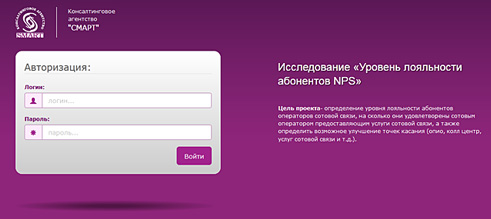

Консалтинговое агенство Смарт.
Веб-анкета - оценка удовлетворенности абонентов

- Задача:
- Разработка веб-приложения
- Технологии:
- Adobe illustrator, Adobe Photoshop, html, css, js, JQuery, Bootstrap 3.0, Laravel 3.2
- Демо:
- http://smart-tj.com
- Дополнительно:
- Адаптивная верстка. На сайте 2 языка